LOGO
JEAN - FRANCOIS MILLET
비주얼 배너 영역
여기는 이미지에 마우스를 올렸을때 나올 텍스트
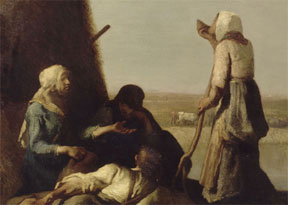
작품명..어쩌구..저쩌구..
작품명..어쩌구..저쩌구..
띠배너 영역
PRERR - AUGUSTE RNOIR
그늘에 앉은 양치기 소녀
1872년 캔버스에 유화 65.4x54.9cm
작품 갤러리 영역
GALLERY
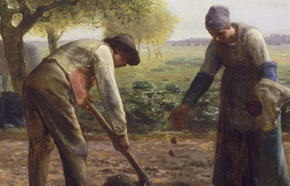
감자 심는 사람들
그레빌의 성당
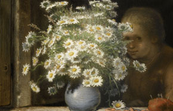
데이지 꽃다발
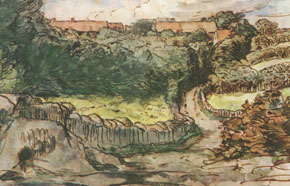
그레빌의 쿠쟁 농장
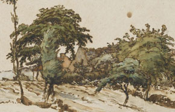
나무 아래 초가집이 있는 풍경
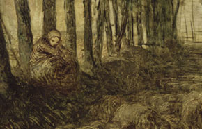
목동과 물소떼(초안)
만종
밝은 달빛 아래 양 떼가 있는 공원
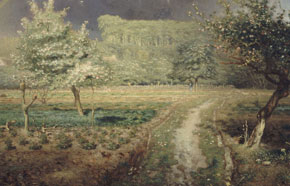
봄
섶나무를 모으는 여인들
소떼들의 귀가
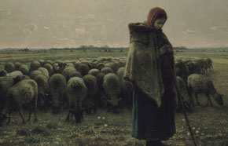
양치는 소녀와 양떼
최근 작품 영역
풍 경 화
이삭 줍는 사람들
1857년
캔버스에 유채
83.6 x 111 cm
이상적 풍경
1860년 ~ 1870년경
캔버스
66.5 x 57 cm
특 별 석
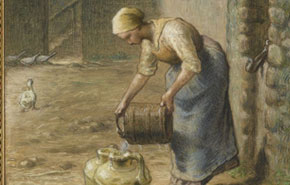
호버효과
정 물 화
이탈리아의 해안 풍경
1860년 ~ 1870년경
캔버스에 유채
119 x 106 cm
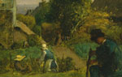
정원장면
1854년
캔버스에 유채
17.1 x 21.3cm
초 상 화
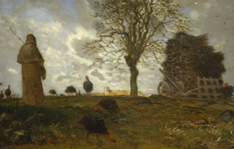
호버효과
큰배너영역
BNR